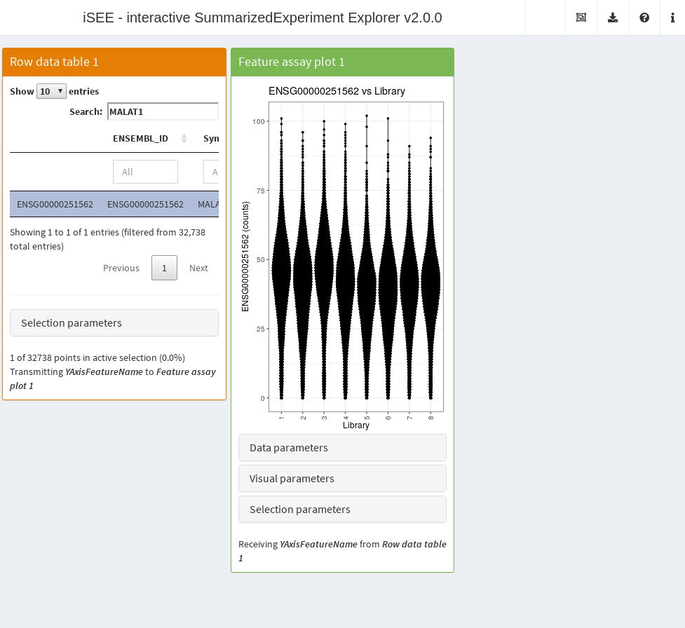
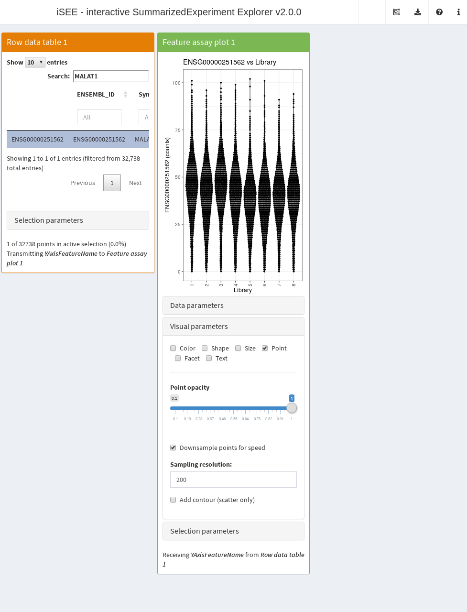
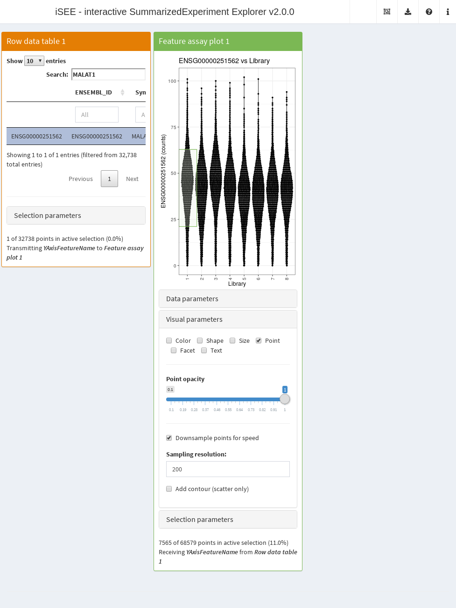

How to use iSEE with big data
Kevin Rue-Albrecht
MRC WIMM Centre for Computational Biology, University of Oxford, Oxford, OX3 9DS, UKkevinrue67@gmail.com
Federico Marini
Institute of Medical Biostatistics, Epidemiology and Informatics (IMBEI), MainzCenter for Thrombosis and Hemostasis (CTH), Mainzmarinif@uni-mainz.de
Charlotte Soneson
Institute of Molecular Life Sciences, University of ZurichSIB Swiss Institute of Bioinformaticscharlottesoneson@gmail.com
Aaron Lun
infinite.monkeys.with.keyboards@gmail.com3 June 2025
Source:vignettes/bigdata.Rmd
bigdata.RmdCompiled date: 2025-06-03
Last edited: 2018-03-08
License: MIT + file LICENSE
Overview
Some tweaks can be performed to enable iSEE to run efficiently on large datasets. This includes datasets with many features (methylation, SNPs) or many columns (cytometry, single-cell RNA-seq). To demonstrate some of this functionality, we will use a dataset from the TENxPBMCData dataset:
library(TENxPBMCData)
sce.pbmc <- TENxPBMCData("pbmc68k")
sce.pbmc$Library <- factor(sce.pbmc$Library)
sce.pbmc
#> class: SingleCellExperiment
#> dim: 32738 68579
#> metadata(0):
#> assays(1): counts
#> rownames(32738): ENSG00000243485 ENSG00000237613 ... ENSG00000215616
#> ENSG00000215611
#> rowData names(3): ENSEMBL_ID Symbol_TENx Symbol
#> colnames: NULL
#> colData names(11): Sample Barcode ... Individual Date_published
#> reducedDimNames(0):
#> mainExpName: NULL
#> altExpNames(0):Using out-of-memory matrices
Many SummarizedExperiment objects store assay matrices
as in-memory matrix-like objects, be they ordinary matrices or
alternative representations such as sparse matrices from the Matrix
package. For example, if we looked at the Allen data, we would see that
the counts are stored as an ordinary matrix.
library(scRNAseq)
sce.allen <- ReprocessedAllenData("tophat_counts")
class(assay(sce.allen, "tophat_counts"))
#> [1] "matrix" "array"In situations involving large datasets and limited computational
resources, storing the entire assay in memory may not be feasible.
Rather, we can represent the data as a file-backed matrix where contents
are stored on disk and retrieved on demand. Within the Bioconductor
ecosystem, the easiest way of doing this is to create a
HDF5Matrix, which uses a HDF5 file
to store all the assay data. We see that this has already been done for
use in the 68K PBMC dataset:
counts(sce.pbmc, withDimnames=FALSE)
#> <32738 x 68579> sparse HDF5Matrix object of type "integer":
#> [,1] [,2] [,3] [,4] ... [,68576] [,68577] [,68578]
#> [1,] 0 0 0 0 . 0 0 0
#> [2,] 0 0 0 0 . 0 0 0
#> [3,] 0 0 0 0 . 0 0 0
#> [4,] 0 0 0 0 . 0 0 0
#> [5,] 0 0 0 0 . 0 0 0
#> ... . . . . . . . .
#> [32734,] 0 0 0 0 . 0 0 0
#> [32735,] 0 0 0 0 . 0 0 0
#> [32736,] 0 0 0 0 . 0 0 0
#> [32737,] 0 0 0 0 . 0 0 0
#> [32738,] 0 0 0 0 . 0 0 0
#> [,68579]
#> [1,] 0
#> [2,] 0
#> [3,] 0
#> [4,] 0
#> [5,] 0
#> ... .
#> [32734,] 0
#> [32735,] 0
#> [32736,] 0
#> [32737,] 0
#> [32738,] 0Despite the dimensions of this matrix, the HDF5Matrix
object occupies very little space in memory.
object.size(counts(sce.pbmc, withDimnames=FALSE))
#> 2496 bytesHowever, parts of the data can still be read in on demand. For all
intents and purposes, the HDF5Matrix appears to be an
ordinary matrix to downstream applications and can be used as such.
This means that we can use the 68K PBMC
SingleCellExperiment object in iSEE() without
any extra work. The app below shows the distribution of counts for
everyone’s favorite gene MALAT1 across libraries. Here,
iSEE() is simply retrieving data on demand from the
HDF5Matrix without ever loading the entire assay matrix
into memory. This enables it to run efficiently on arbitrary large
datasets with limited resources.
library(iSEE)
app <- iSEE(sce.pbmc, initial=
list(RowDataTable(Selected="ENSG00000251562", Search="MALAT1"),
FeatureAssayPlot(XAxis="Column data", XAxisColumnData="Library",
YAxisFeatureSource="RowDataTable1")
)
)
Generally speaking, these HDF5 files are written once by a process
with sufficient computational resources (i.e., memory and time). We
typically create HDF5Matrix objects using the
writeHDF5Array() function from the HDF5Array
package. After the file is created, the objects can be read many times
in more deprived environments.
sce.h5 <- sce.allen
library(HDF5Array)
assay(sce.h5, "tophat_counts", withDimnames=FALSE) <-
writeHDF5Array(assay(sce.h5, "tophat_counts"), file="assay.h5", name="counts")
class(assay(sce.h5, "tophat_counts", withDimnames=FALSE))
#> [1] "HDF5Matrix"
#> attr(,"package")
#> [1] "HDF5Array"
list.files("assay.h5")
#> character(0)It is worth noting that iSEE() does not know or care
that the data is stored in a HDF5 file. The app is fully compatible with
any matrix-like representation of the assay data that supports
dim() and [,. As such, iSEE() can
be directly used with other memory-efficient objects like the
DeferredMatrix and LowRankMatrix from the
BiocSingular
package, or perhaps the ResidualMatrix from the batchelor
package.
Downsampling points
It is also possible to downsample points to reduce the time required to generate the plot. This involves subsetting the dataset so that only the most recently plotted point for an overlapping set of points is shown. In this manner, we avoid wasting time in plotting many points that would not be visible anyway. To demonstrate, we will re-use the 68K PBMC example and perform downsampling on the feature assay plot; we can see that its aesthetics are largely similar to the non-downsampled counterpart above.
library(iSEE)
app <- iSEE(sce.pbmc, initial=
list(RowDataTable(Selected="ENSG00000251562", Search="MALAT1"),
FeatureAssayPlot(XAxis="Column data", XAxisColumnData="Library",
YAxisFeatureSource="RowDataTable1",
VisualChoices="Point", Downsample=TRUE,
VisualBoxOpen=TRUE
)
)
)
Downsampling is possible in all iSEE() plotting panels
that represent features or samples as points. We can turn on
downsampling for all such panels using the relevant field in
panelDefaults(), which spares us the hassle of setting
Downsample= individually in each panel constructor.
panelDefaults(Downsample=TRUE)The downsampling only affects the visualization and the speed of the plot rendering. Any interactions with other panels occur as if all of the points were still there. For example, if one makes a brush, all of the points therein will be selected regardless of whether they were downsampled.

The downsampling resolution determines the degree to which points are considered to be overlapping. Decreasing the resolution will downsample more aggressively, improving plotting speed but potentially affecting the fidelity of the visualization. This may compromise the aesthetics of the plot when the size of the points is small, in which case an increase in resolution may be required at the cost of speed.
Obviously, downsampling will not preserve overlays for partially transparent points, but any reliance on partial transparency is probably not a good idea in the first place when there are many points.
Changing the interface
One can generally improve the speed of the iSEE()
interface by only initializing the app with the desired panels. For
example, it makes little sense to spend time rendering a
RowDataPlot when only the ReducedDimensionPlot
is of interest. Specification of the initial state is straightforward
with the initial= argument, as described in a previous
vignette.
On occasion, there may be alternative panels with more efficient
visualizations for the same data. The prime example is the
ReducedDimensionHexPlot class from the iSEEu
package; this will create a hexplot rather than a scatter plot, thus
avoiding the need to render each point in the latter.
Comments on deployment
It is straightforward to host iSEE
applications on hosting platforms like Shiny Server
or Rstudio Connect.
All one needs to do is to create an app.R file that calls
iSEE() with the desired parameters, and then follow the
instructions for the target platform. For a better user experience, we
suggest setting a minimum number of processes to avoid the initial delay
from R start-up.
It is also possible to deploy and host Shiny app on shinyapps.io, a platform as a service (PaaS) provided by RStudio. In many cases, users will need to configure the settings of their deployed apps, in particular selecting larger instances to provide sufficient memory for the app. The maximum amount of 1GB available to free accounts may not be sufficient to deploy large datasets; in which case you may consider using out-of-memory matrices, filtering your dataset (e.g., removing lowly detected features), or going for a paid account. Detailed instructions to get started are available at https://shiny.rstudio.com/articles/shinyapps.html. For example, see the isee-shiny-contest app, winner of the 1st Shiny Contest.
Session Info
sessionInfo()
#> R version 4.5.0 (2025-04-11)
#> Platform: x86_64-pc-linux-gnu
#> Running under: Ubuntu 24.04.2 LTS
#>
#> Matrix products: default
#> BLAS: /usr/lib/x86_64-linux-gnu/openblas-pthread/libblas.so.3
#> LAPACK: /usr/lib/x86_64-linux-gnu/openblas-pthread/libopenblasp-r0.3.26.so; LAPACK version 3.12.0
#>
#> locale:
#> [1] LC_CTYPE=en_US.UTF-8 LC_NUMERIC=C
#> [3] LC_TIME=en_US.UTF-8 LC_COLLATE=en_US.UTF-8
#> [5] LC_MONETARY=en_US.UTF-8 LC_MESSAGES=en_US.UTF-8
#> [7] LC_PAPER=en_US.UTF-8 LC_NAME=C
#> [9] LC_ADDRESS=C LC_TELEPHONE=C
#> [11] LC_MEASUREMENT=en_US.UTF-8 LC_IDENTIFICATION=C
#>
#> time zone: UTC
#> tzcode source: system (glibc)
#>
#> attached base packages:
#> [1] stats4 stats graphics grDevices utils datasets methods
#> [8] base
#>
#> other attached packages:
#> [1] iSEE_2.21.1 scRNAseq_2.22.0
#> [3] TENxPBMCData_1.26.0 HDF5Array_1.36.0
#> [5] h5mread_1.0.1 rhdf5_2.52.0
#> [7] DelayedArray_0.34.1 SparseArray_1.8.0
#> [9] S4Arrays_1.8.1 abind_1.4-8
#> [11] Matrix_1.7-3 SingleCellExperiment_1.30.1
#> [13] SummarizedExperiment_1.38.1 Biobase_2.68.0
#> [15] GenomicRanges_1.60.0 GenomeInfoDb_1.44.0
#> [17] IRanges_2.42.0 S4Vectors_0.46.0
#> [19] BiocGenerics_0.54.0 generics_0.1.4
#> [21] MatrixGenerics_1.20.0 matrixStats_1.5.0
#> [23] BiocStyle_2.36.0
#>
#> loaded via a namespace (and not attached):
#> [1] RColorBrewer_1.1-3 jsonlite_2.0.0 shape_1.4.6.1
#> [4] magrittr_2.0.3 GenomicFeatures_1.60.0 gypsum_1.4.0
#> [7] farver_2.1.2 rmarkdown_2.29 GlobalOptions_0.1.2
#> [10] fs_1.6.6 BiocIO_1.18.0 ragg_1.4.0
#> [13] vctrs_0.6.5 memoise_2.0.1 Rsamtools_2.24.0
#> [16] RCurl_1.98-1.17 htmltools_0.5.8.1 AnnotationHub_3.16.0
#> [19] curl_6.2.3 Rhdf5lib_1.30.0 sass_0.4.10
#> [22] alabaster.base_1.8.0 bslib_0.9.0 htmlwidgets_1.6.4
#> [25] desc_1.4.3 alabaster.sce_1.8.0 fontawesome_0.5.3
#> [28] listviewer_4.0.0 httr2_1.1.2 cachem_1.1.0
#> [31] GenomicAlignments_1.44.0 igraph_2.1.4 mime_0.13
#> [34] lifecycle_1.0.4 iterators_1.0.14 pkgconfig_2.0.3
#> [37] colourpicker_1.3.0 R6_2.6.1 fastmap_1.2.0
#> [40] shiny_1.10.0 GenomeInfoDbData_1.2.14 clue_0.3-66
#> [43] digest_0.6.37 colorspace_2.1-1 AnnotationDbi_1.70.0
#> [46] ExperimentHub_2.16.0 textshaping_1.0.1 RSQLite_2.4.0
#> [49] filelock_1.0.3 mgcv_1.9-3 httr_1.4.7
#> [52] compiler_4.5.0 bit64_4.6.0-1 withr_3.0.2
#> [55] doParallel_1.0.17 BiocParallel_1.42.1 DBI_1.2.3
#> [58] shinyAce_0.4.4 alabaster.ranges_1.8.0 alabaster.schemas_1.8.0
#> [61] rappdirs_0.3.3 rjson_0.2.23 tools_4.5.0
#> [64] vipor_0.4.7 httpuv_1.6.16 glue_1.8.0
#> [67] restfulr_0.0.15 nlme_3.1-168 promises_1.3.3
#> [70] rhdf5filters_1.20.0 grid_4.5.0 cluster_2.1.8.1
#> [73] gtable_0.3.6 ensembldb_2.32.0 XVector_0.48.0
#> [76] ggrepel_0.9.6 BiocVersion_3.21.1 foreach_1.5.2
#> [79] pillar_1.10.2 later_1.4.2 rintrojs_0.3.4
#> [82] splines_4.5.0 circlize_0.4.16 dplyr_1.1.4
#> [85] BiocFileCache_2.16.0 lattice_0.22-7 rtracklayer_1.68.0
#> [88] bit_4.6.0 tidyselect_1.2.1 ComplexHeatmap_2.24.0
#> [91] miniUI_0.1.2 Biostrings_2.76.0 knitr_1.50
#> [94] bookdown_0.43 ProtGenerics_1.40.0 shinydashboard_0.7.3
#> [97] xfun_0.52 DT_0.33 UCSC.utils_1.4.0
#> [100] lazyeval_0.2.2 yaml_2.3.10 shinyWidgets_0.9.0
#> [103] evaluate_1.0.3 codetools_0.2-20 tibble_3.2.1
#> [106] alabaster.matrix_1.8.0 BiocManager_1.30.25 cli_3.6.5
#> [109] xtable_1.8-4 systemfonts_1.2.3 jquerylib_0.1.4
#> [112] Rcpp_1.0.14 dbplyr_2.5.0 png_0.1-8
#> [115] XML_3.99-0.18 parallel_4.5.0 ggplot2_3.5.2
#> [118] pkgdown_2.1.3 blob_1.2.4 AnnotationFilter_1.32.0
#> [121] bitops_1.0-9 viridisLite_0.4.2 alabaster.se_1.8.0
#> [124] scales_1.4.0 purrr_1.0.4 crayon_1.5.3
#> [127] GetoptLong_1.0.5 rlang_1.1.6 KEGGREST_1.48.0
#> [130] shinyjs_2.1.0
# devtools::session_info()